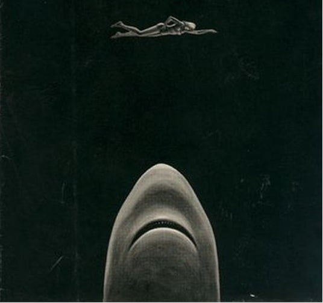
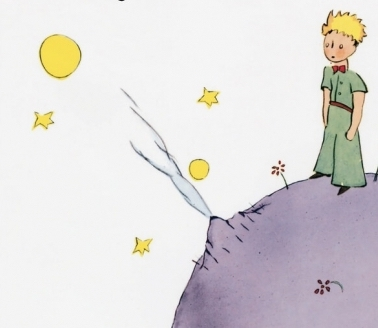
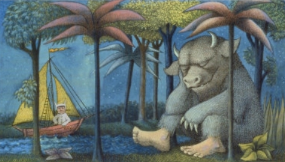

Can you name which books these iconic cover images belong to?
Fun Fact: One working title for this book was "The Stillness in the Water."
Fun Fact: According to some sources, this is one of the best-selling and most translated books ever published.
Fun Fact: In a list published in January 2020, this book was number four on the list of "Top Check Outs OF ALL TIME" by the New York Public Library.
Fun Fact: This cover art is by painter Marshall Arisman.